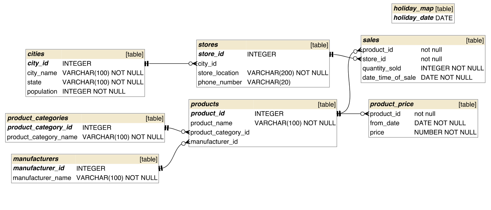
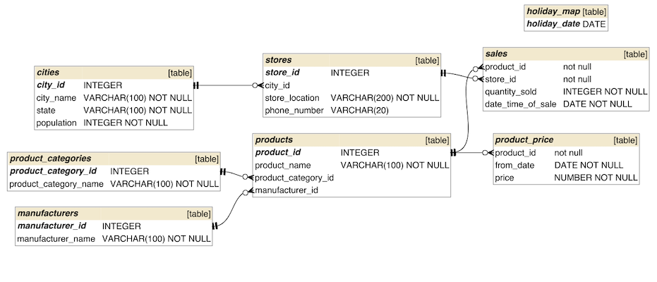
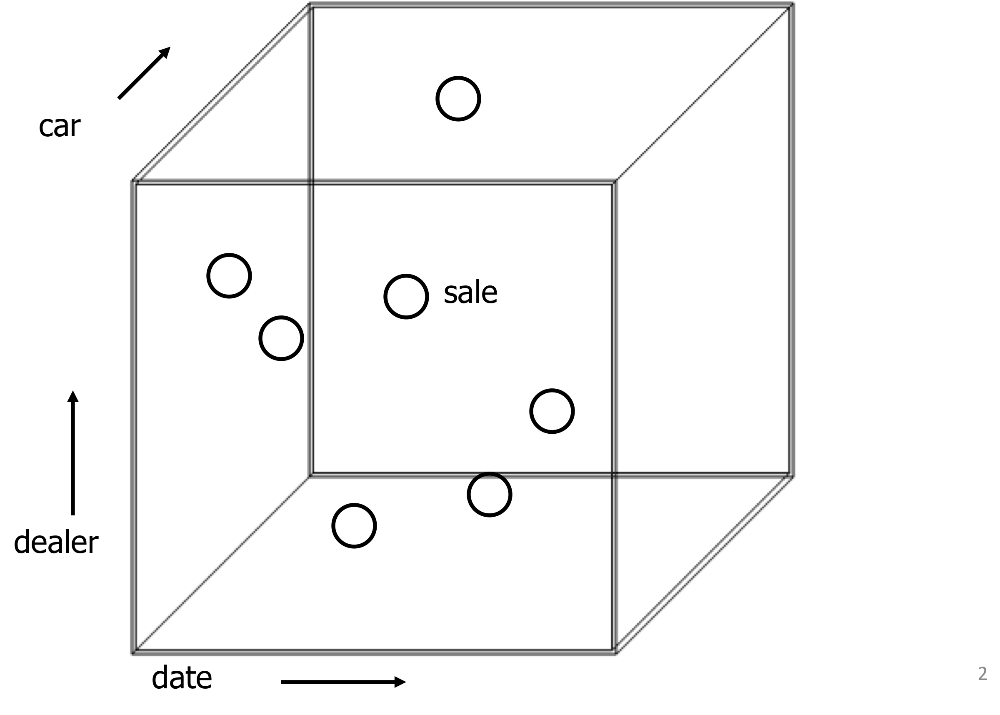

Een belangrijke toepassing van databases is om een analyse te doen van data: Online Analytic Processing (OLAP). Opgezochte informatie wordt dan vaak gebruikt om bedrijfsprocessen te sturen; de database wordt gebruikt als decision support system. Een bedrijf wil bijvoorbeeld weten welke producten beter of juist minder goed verkopen.
Decision support queries bevragen vaak grote datasets. Ter contrast: het registreren van bedrijfsprocessen raakt vaak maar een klein stukje van de database. Systemen die vooral registreren worden Online Transaction Processing (OLTP) genoemd.
OLTP gaat uit van sommige aannames:
OLAP-queries zijn bijna altijd ad-hoc, en dus kun je de database niet vantevoren optimaliseren.

"I noticed that there was a Heineken promotion recently, directed at people who live in small towns. How much Heineken beer did we sell in those towns yesterday? And how much on the same day a month ago?"

select sum(sales.quantity_sold) from sales, products, product_categories, manufacturers, stores, cities where manufacturer_name = 'Heineken' and product_category_name = 'beer' and cities.population < 40000 and trunc(sales.date_time_of_sale) = trunc(sysdate-1) -- restrict to yesterday and sales.product_id = products.product_id and sales.store_id = stores.store_id and products.product_category_id = product_categories.product_category_id and products.manufacturer_id = manufacturers.manufacturer_id and stores.city_id = cities.city_id;
Sales in vakantie-periodes:
select sum(sales.quantity_sold) from sales, holiday_map where trunc(sales.date_time_of_sale) = trunc(holiday_map.holiday_date)
Sales in niet-vakantie-periodes:
select sum(sales.quantity_sold) from sales where trunc(sales.date_time_of_sale) not in (select holiday_date from holiday_map)
"Sales in winkels met veel verkoop."
… SQL om winkels te vinden die veel verkopen…
select store_id from sales group by store_id having sum(quantity_sold) > 1000
… SQL om in die winkels (via subquery) de sales te vinden…
select sum(quantity_sold) from sales where store_id in (select store_id from sales group by store_id having sum(quantity_sold) > 1000)
Wat is het probleem?
De objects of interest staan gegroepeerd in een fact table met zogenaamde dependent attributes, en alle eigenschappen staan in zogenaamde dimension tables. De fact table vormt het midden van de ster, en de dimension tables zijn de punten van de ster. Dimensies van een tabel met verkoop kunnen zijn: de datum van verkoop, de plaats van verkoop, het type item, de betaal-methode, etc.
In het eerste jaar in de database-cursus wordt juist een andere manier aangeleerd om schema's te ontwerpen, namelijk door normalizatie-regels.
Transformeer het genormaliseerde model tot een star schema.
Welke query?
"Rapporteer sales per seizoen".
Schrijf uit voor de genormaliseerde en voor de gedenormaliseerde versie.
Soms willen we de granulariteit van een dimensie verminderen. We zijn bijvoorbeeld niet geïnteresseerd in individuele auto's, maar in auto's gegroepeerd naar merk of kleur; of we willen alle verkopen op een dag nauwkeurig, in plaats van op de seconde nauwkeurig weten.
Voor dealers kunnen we indelen per dealer, per stad, per staat, of helemaal niet groeperen.
Het groeperen in een kubus heet dicing. We zijn vaak geinteresseerd in één specifieke dice: slicing. Queries die de data grover indelen, noemen we roll up-queries; een query die juist meer partities maakt en dus de data fijnmaziger indeelt, heet een drill-down-query.

Eén van de vijf V's van big data: variety.
Text mining representeert een klasse toepassingen waarbij uit ongestructureerde data (teksten, plaatjes, video, audio) informatie wordt verkregen.
In de kern gaat het bij text mining om het "samenvatten van tekst": afleiden van zinvolle karakteristieken waarmee je teksten kun vergelijken. Zo ook bij plaatjes/video/audio etc. Begrip: features.
Bijvoorbeeld: klant-contact data en het vinden van sentiment.
Big Data projecten: Vodafone-Ziggo project.
Bijvoorbeeld: routeren van klantcontacten. Implementatie achter chatbots. Detectie van spam.
In video: vinden van illegale kopieën van video's op youtube.
In video: detecteren van beweging.
Gegeven een tekst, wie is de auteur?
Bijvoorbeeld belangrijk om te bepalen wat voor iemand een tweet heeft geplaatst (voor het targeten van advertenties).
Bijvoorbeeld: detectie van nepbellers bij de suicide hotlijn.
Herkennen van namen en persoonsgerelateerde informatie.
Tegenwoordig zeer belangrijk om anonimiteit en privacy te garanderen (AVG),
Bijvoorbeeld: "Mijn tante Elsbeth ging gisteren naar New York."
In video: detecteren van objecten.
Databricks]] is een PAAS (Platform-as-a-service) provider voor Big Data analyse. Zij bieden een gratis Apache Spark omgeving, waar je direct Spark-notebooks kunt implementeren en testen. Ga naar hun trial-omgeving en schrijf je in voor de Community Edition (gebruik eventueel een tijdelijk account als je geen spam wilt ontvangen).
Volg binnen hun omgeving de introductie-tutorial.
Apache Spark heeft standaard TF/IDF analysemogelijkheden aan boord.
Her-implementeeer je oplossing van maandag met behulp van Spark.
Een run van de spider van OSF resulteerde in een eerste set met 1,5 Gb aan data. Je kunt de data via deze link downloaden.
Laad de data in je Spark notebook.